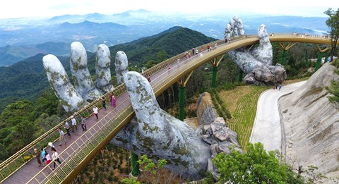
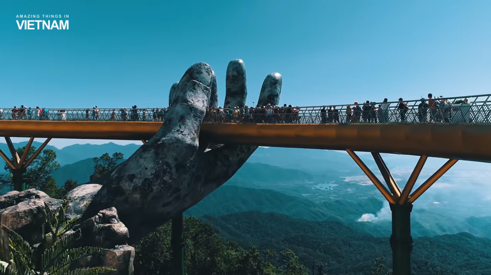
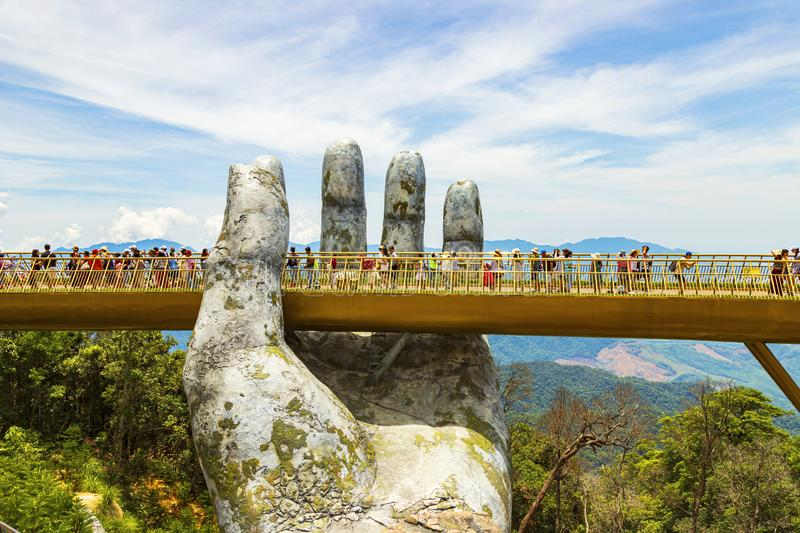
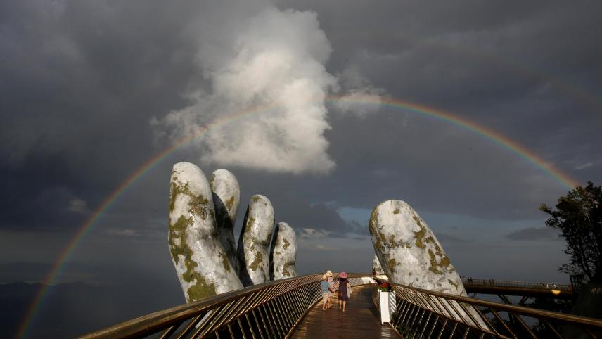

Le Vietnam est un pays d'Asie du Sud-Est, situé à l'est de la péninsule indochinoise. Il fait également partie de la sinosphère (sphère culturelle chinoise), aussi appelée sphère culturelle d'Asie de l'Est.
Le vietnam partage ses frontières avec la Chine au nord, le Laos au nord-ouest et le Cambodge au sud-ouest. Sa capitale est Hanoï. La langue officielle est le vietnamien et la monnaie le dong.
Depuis plusieurs années, des attractions spectaculaires voient le jour au Vietnam qui ambitionne de devenir une destination touristique incontournable en Asie du Sud-Est. C'est ainsi que le Pont D'or fur créé.

Inauguré à la fin juin dans la station touristique de Ba Na Hills , le pont d'or est un pont piétonnier long de 150 mètres, située à 1400 m d'altitude près de Da Nang au Viêt Nam.
Ce pont a été conçu uniquement pour servir d'attraction touristique et comme point de vue sur les collines boisées du centre du pays.


Il forme une boucle, et semble être soutenu par deux immenses mains en béton.
C'est ainsi que La station balnéaire de Ba Na est dailleur devenu un haut lieu du tourisme vietnamien : on y a construit un téléphérique ainsi qu’un village français médiéval, avec château et cathédrale.
